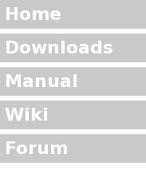

|
 |
PAlib Downloads
PAlib 290723 This is a modified version of PAlib that works on modern devkitARM. It has some compiler warnings but it works. mdPAlib 280523-RE This is a more updated version of PAlib without so much bloat and other features. PAlib 100707 This is the older version of PAlib that only works on devkitARM r32. Thank you gamebrew. |